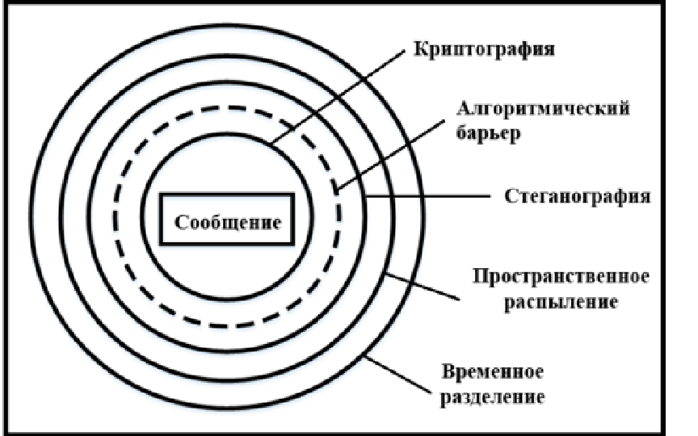
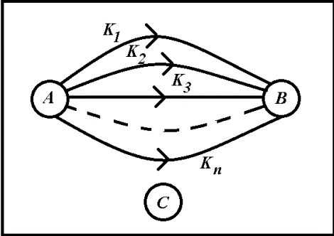

1. Принципы многоуровневой защиты информации
В настоящее время защита информации, как передаваемой, так и хранимой, основывается на принципах, созданных в области криптографии и стеганографии. Криптографические методы используются для преобразования сообщения в набор символов, который без ключа не может быть прочитан. Стеганография позволяет создать скрытый канал связи, который трудно обнаружить. Распределение скрытой информации происходит по секретному ключу.
Однако, специалисты проводят успешные атаки на известные шифры и методы стеганографии, что указывает на уязвимость существующих принципов защиты информации. Через несколько лет после создания шифра появляется эффективная атака на него, и его использование постепенно затухает.
Принципиально новым подходом к защите информации может стать метод формирования нескольких уровней защиты сообщений
На рисунке изображены пять потенциальных барьеров для защиты информации. Пространственное распыление может служить дополнительным средством защиты информации, помимо криптографической и стеганографической защиты. Суть данного метода заключается в разбиении сообщения на мелкие составляющие и передаче их по нескольким каналам связи
Трудность перехвата всех компонентов информации нарушителем C возникает из-за того, что отправители А и В могут использовать различные каналы связи (радио, спутниковые). Для передачи информации в мировой сети существует множество услуг (электронная почта, мессенджеры и т.д.). Использование сотовой связи позволяет разбить сообщение на несколько MMS или SMS и передать их через большое количество телефонных каналов.
Кроме трех уровней защиты информации, можно создать еще один уровень (четвертый), который будет сочетаться с предыдущими барьерами. Это временное разделение сообщения (передача данных по заранее согласованному расписанию). Пространственное и временное разделение сообщения могут быть объединены в единый барьер, который называется пространственно-временным распылением сообщения.
Пятый барьер в криптографии основан на обработке блоков криптограммы, где отсутствие хотя бы одного блока вызывает вычислительные сложности для криптоаналитика.
Создание множества барьеров разного вида позволяет осуществить комплексную, многоуровневую защиту информации. Выбор степени защиты сообщения зависит от конкретной ситуации. Однако, реализация этих мер повышения криптостойкости может увеличить время передачи сообщения, число ошибок и усложнить процедуру передачи.